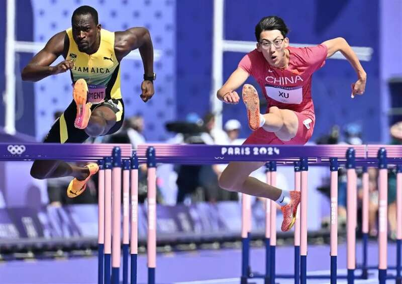
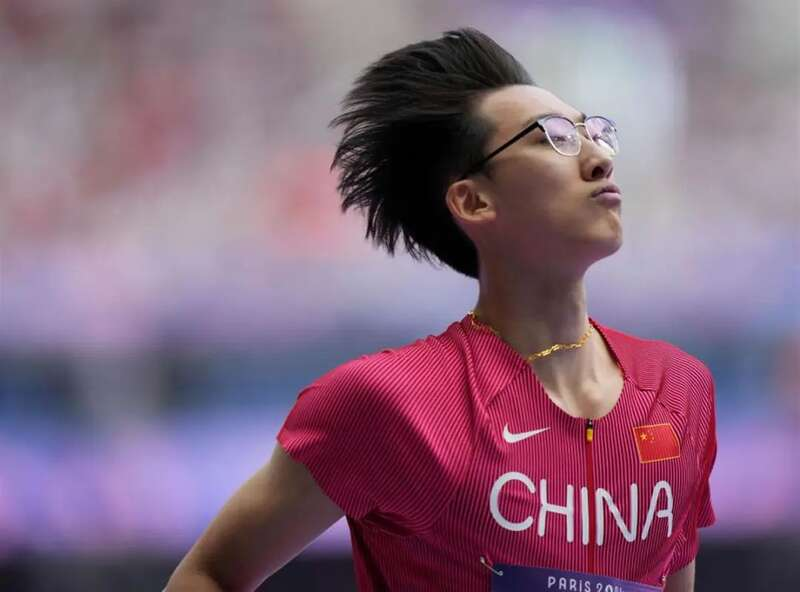
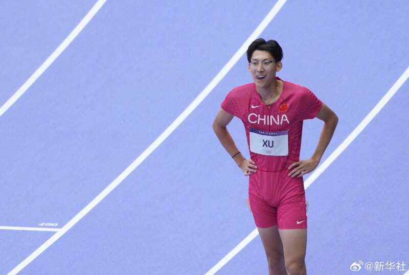
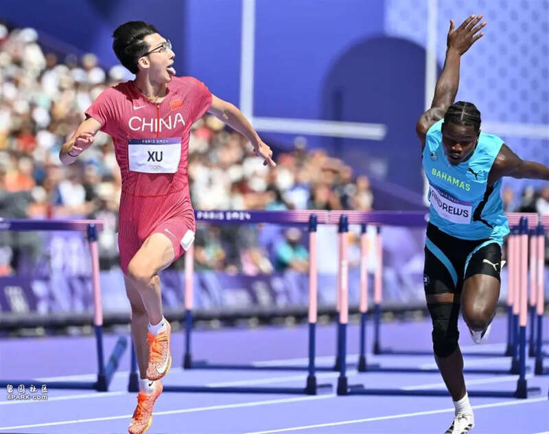
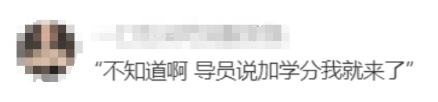
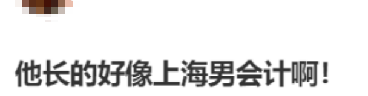
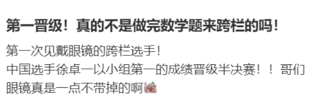

北京时间8月4日晚，巴黎奥运会田径男子110米栏第一轮比赛，中国选手徐卓一13.40秒的成绩小组排名第一晋级半决赛。网友纷纷表示：戴最斯文的眼镜跨最猛的栏！
据了解，徐卓一是刘翔的师弟，因戴着眼镜跑步而被称为“眼镜飞人”。赛后他表示，翔哥是他追赶的目标。“20年前他创造的奥运会纪录还在这里，对我也是一种激励，现在目标是努力追赶他。”

中国选手徐卓一（右）在比赛中（新华社记者吕小炜摄）
当天的比赛，徐卓一第三组出场，他的起跑反应迅速，后半程持续发力，率先冲过终点，成绩为13秒40，以小组第一身份轻松晋级半决赛。
徐卓一赛后表示，没想到能获得小组第一，比赛中前半程速度没加起来，靠后程拼了出来。“预赛算是给自己心里留了个底，后程是我的强项，下一场争取前程再做得完美一些，希望能进入前八名。”
据了解，2003年出生的徐卓一曾在2023年的杭州亚运会上获得铜牌，当时的成绩是13.50秒，今年5月29日，他又在全国田径大奖赛第5站男子110米栏决赛中，以13.22秒的个人最好成绩夺冠，最终成功入选巴黎奥运会，为国出征。他也由此成为中国“00后”运动员中，男子跨栏项目第一位达到奥运标准的选手。

中国选手徐卓一在比赛后（新华社记者李钢摄）报道称，徐卓一的师傅正是曾经带出刘翔的名师孙海平。比赛当中，徐卓一戴着半框眼镜，给人一种文质彬彬的感觉，这与其参加的跨栏项目形成对比，网友们也纷纷调侃道：“以为是搞奥数的，没想到是搞奥运的。”

当然，也有网友好奇，为什么徐卓一要戴着眼镜参赛？难道隐形眼镜不可以吗？对此，中国中医科学院眼科医院副院长谢立科解释称：“并不是所有人都适合佩戴隐形眼镜，也并不是所有情况都可以佩戴，例如进行剧烈运动时不建议佩戴隐形眼镜，尤其是对抗性较强的拳击、篮球、足球等运动。上述剧烈运动很容易导致隐形眼镜出现脱落的情况，甚至还会刺激到眼球，从而导致眼睛受到伤害。”
谢立科称，在特定的情况下，戴眼镜进行跑步运动是可以的，但不建议戴隐形眼镜，因为剧烈运动会导致人大量出汗，汗水对眼睛会产生刺激，有不适感时我们都会不自觉去揉搓眼睛，这种不自觉的揉搓可能会损伤角膜。

中国选手徐卓一（左）在比赛中（新华社记者吕小炜摄）
网友评论：


